ColorPhage Forest Family Candidates
这是第一个进阶 family 的候选预览。Forest 不追求全绿同色系，而是用森林绿、苔绿、灰青、土色和少量暖色锚点构成适合生命科学图形的自然秩序感。
advanced family: forest
candidate count: 3
n = 8
plots rendered by ggplot2
advanced family / forest
Forest Canopy forest_canopy
稳重林冠层：适合微生物群落组成、生态位分组、环境来源比较。
#23483A#6F8F62#A9B98F#6F9092#D6B36A#C98563#8A4A58#E6DCC6Fill / bar
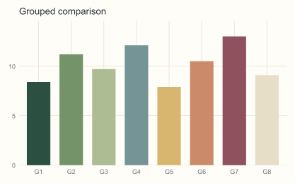
Colour / scatter
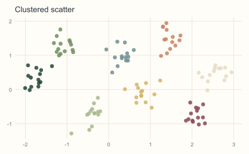
Colour / line
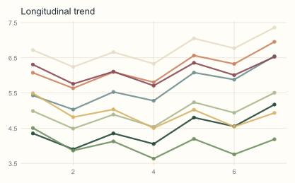
UMAP-like
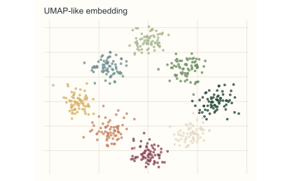
advanced family / forest
Forest Moss forest_moss
柔和苔藓层：适合处理组比较、肠道菌群、代谢组和环境因子关联。
#557A5C#8CA97A#B8C6A3#789C9A#AFC6C2#D7C8A5#C99576#7A5B4EFill / bar
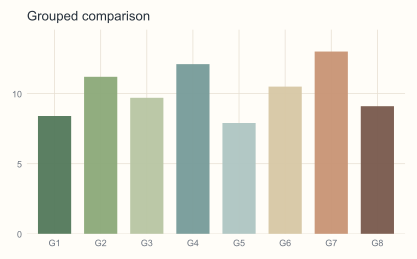
Colour / scatter
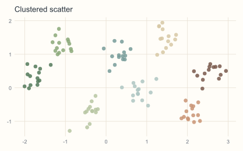
Colour / line
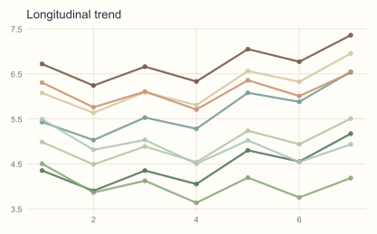
UMAP-like
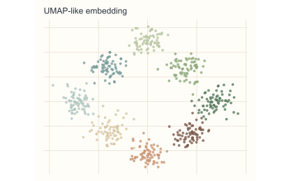
advanced family / forest
Forest Ember forest_ember
森林余烬：适合疾病对照、机制图和需要暖色锚点的主结果图。
#1F3F35#496B57#7E916A#B8B58B#536E76#9A6B5A#C46F52#D7C6A1Fill / bar
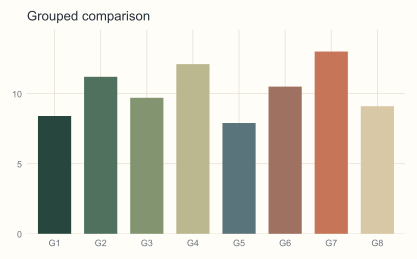
Colour / scatter
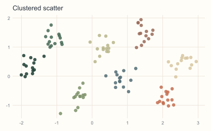
Colour / line
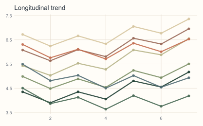
UMAP-like
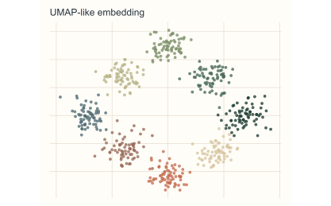